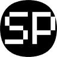
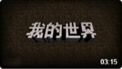
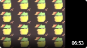
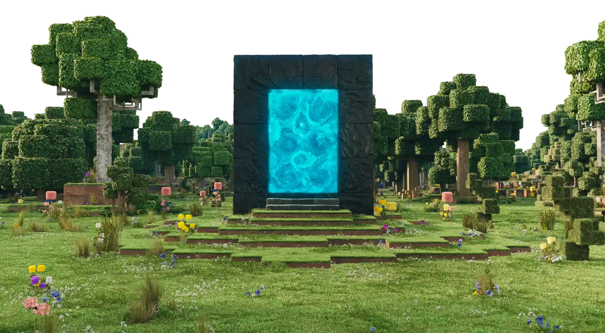

▶个人简介

ScratchPython
▶我的视频
|
 |
终末之诗 - 网易版 终末之诗·刚毅板。制作不易，感谢观看。 纯文本：终末之诗·刚毅板 |
|---|---|
|
 |
‽Melodía Triste·windows welcome music (Cymic Bootleg)⸘ Windowsの小曲。视频画面使用Turbowarp编写。 |
*点击图片以跳转至视频页面
▶内容资源
| ● 我的世界 | ● 终末之诗 | ● SP天气 |
|---|---|---|
| 立即下载 | 立即查看 | 进入查询 |
| Outlook | |
|---|---|
| Github |
